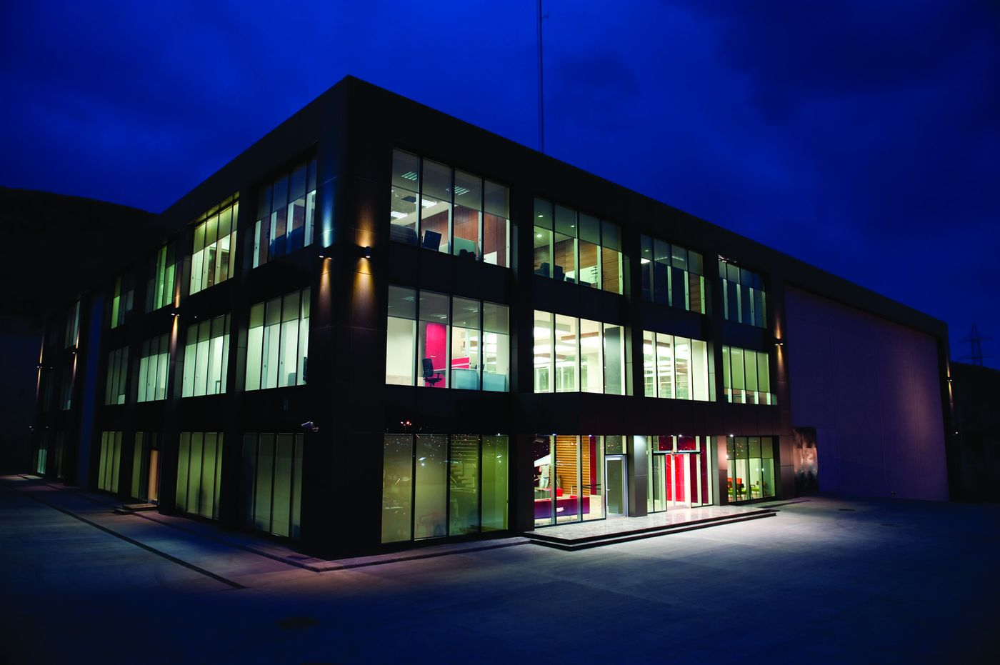
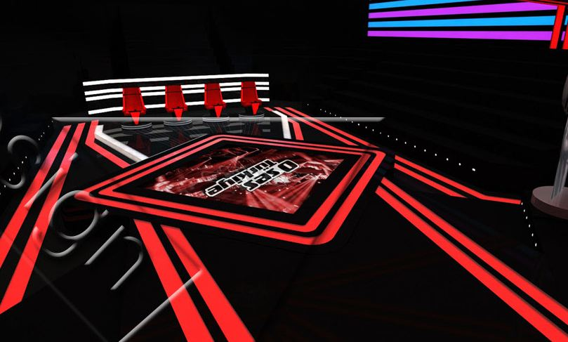
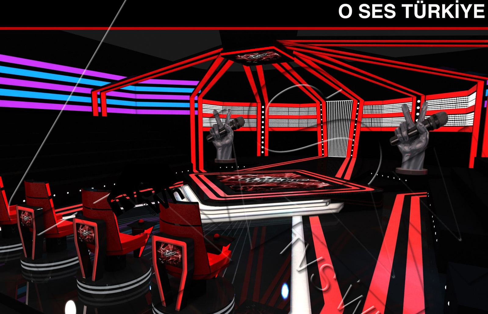
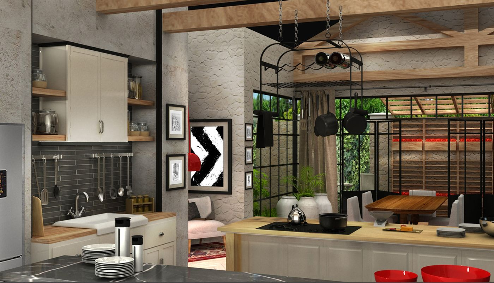
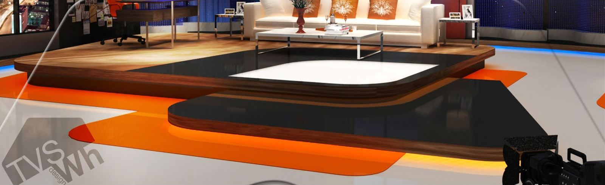
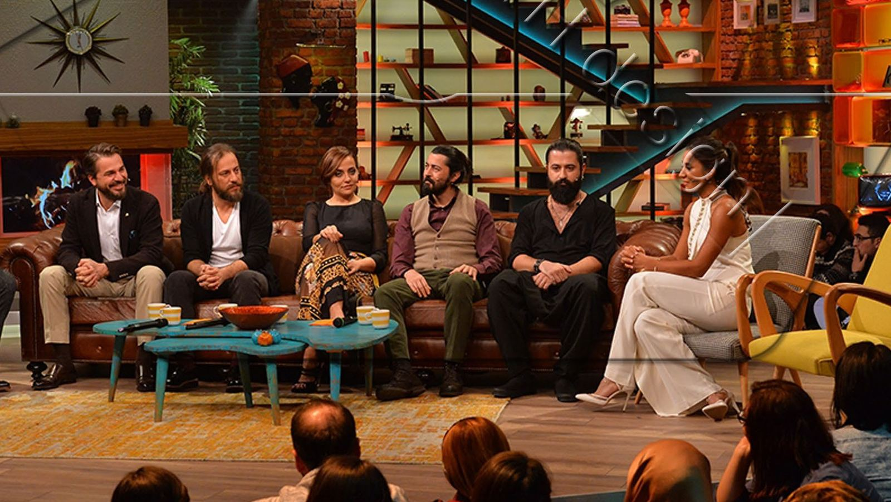

Lingo
TRT 1 · Estudios Kağıthane

Estudios, cámaras, realización, sonido, iluminación, LED y escenografía: todo lo que necesita un programa de televisión, desde el primer boceto hasta la emisión en directo, con un solo equipo. De Estambul a Doha, de Trípoli a Duhok, de Moscú a Francia.
Esta temporada
Programas que se emiten hoy, grabados en nuestros estudios y llevados al aire por nuestro equipo.
TRT 1 · Estudios Kağıthane

NOW · Estudios Kağıthane
Libia
Dos divisiones
El equipo que diseña un decorado es el mismo que lo construye, lo ilumina y lo pone en el aire. Sin subcontratas intermedias, con un único responsable.

TVS Production / TVS Studios
En nuestro estudio de Estambul o en su sede: producción completa con cámaras, control de realización e iluminación.

TVS WorkHouse
Concepto, diseño 3D, fabricación e instalación para informativos, deportes, concursos y entretenimiento. Proyectos de museos y espacios.
Planificación espacial y acústica de estudios, controles y edificios de medios.
Diseño de los sistemas de cámara, sonido, iluminación, LED y emisión.
Equipos de distintos fabricantes unidos en un único sistema de emisión que funciona.
Montaje, pruebas y puesta en marcha, con soporte técnico tras salir al aire.
Para nosotros un proyecto no termina el día de la entrega: el éxito es que funcione sin problemas durante años y con eficiencia operativa. No somos solo un contratista, sino un socio estratégico y de confianza.
Nuestras raíces
Más de treinta años, de los rodajes de cine a los estudios de televisión.
Entrada en el sector con servicios de producción cinematográfica.
ATA Film Studios: cinco platós con aislamiento acústico en 6.500 m² en Estambul. Los diseñamos y construimos.
TEM Studios se integró en ATA Film Studios.
Fundación de TVS Production.
Moscú: estudios de beIN Sports para la Copa Mundial.
Catar: escenografías de emisión y de estadios para la Copa Mundial.
Lingo y Kumbara en nuestros estudios de Kağıthane; proyectos en curso para Al Jazeera y ATV.


Más allá de las fronteras
Proyectos llave en mano para cadenas e instituciones públicas, del Golfo al norte de África, de Europa a las Américas.
Diseño y construcción de platós, pantallas LED y renovación en toda la cadena.
Platós de beIN en Moscú para la Copa Mundial de la FIFA 2018.
Copa Mundial de la FIFA 2022: platós de emisión, instalaciones en estadios y producción de eventos.

Diseño y construcción: de un terreno vacío a la emisión, un complejo de medios con platós insonorizados que alberga dos canales nacionales de televisión, una radio y un periódico.
Producción de la ceremonia de inauguración del aeropuerto.
Renovación del museo: diseño e instalación.
Pantallas LED e iluminación del aeropuerto.
Celebraciones del 17 de febrero y del Día de la Liberación del 23 de octubre, eventos en Rixos, numerosos congresos, inauguraciones y lanzamientos.
Escenografías para los estudios del canal.
Diseño de escenografía para estudio de emisión y una unidad móvil totalmente equipada.
Platós de TV, eventos de inauguración y diseño e instalación de escenarios.
Unidades móviles totalmente equipadas para Equidia y HC Racing en Francia y para Salam TV en Libia: diseño, fabricación y entrega.
Proyectos de estudios docentes para universidades.
TVS suministró todas las pantallas LED de los nuevos estudios y sigue prestando soporte técnico.
Plató de informativos deportivos y pantallas LED.
Escenografías para los estudios del canal.
Nuestro estudio de diseño
Nuestro equipo de diseño en Estambul crea escenografías y escenarios para informativos, deportes, concursos, entretenimiento, galas de premios, museos y eventos. Como diseño y construcción están bajo un mismo techo, todo lo que dibujamos se puede construir y su presupuesto está claro desde el primer día.
La primera idea, a partir del formato del programa, los ángulos de cámara y la identidad de marca.
Renders fotorrealistas en 3ds Max: ve el estudio antes de que exista.
Planos en AutoCAD, implantación de LED e iluminación, materiales y desglose de costes.
Fabricación en taller, montaje in situ, integración de iluminación y LED, entrega lista para emitir.
Diseñado por TVS WorkHouse
Una selección de los estudios que hemos diseñado y construido para las principales cadenas de Turquía.










Con quién trabajamos
Cadenas y organizaciones para las que hemos construido estudios, diseñado escenarios y trabajado a lo largo de los años.
TVS Group
Nuestra actividad fuera de los medios funciona con marcas propias.
Construcción llave en mano y promoción inmobiliaria, Estambul.
smartyapim.com → Náutica · YatesExcursiones en velero y alquiler de yates desde Fethiye.
sailamor.com →Gestión de flota de embarcaciones y de yates.
Consultoría en tecnología de emisión e integración de sistemas. Proyectos tecnológicos en el extranjero, como la lectura automática de contadores de agua y la automatización de cajeros automáticos.
Estudio y oficina
Un nuevo programa, la renovación de un estudio, un evento o un proyecto en el extranjero: definimos el encargo con usted en la primera reunión y volvemos con un diseño y un presupuesto.
Accesibilidad
Queremos que todas las personas, incluidas las ciegas o con baja visión, puedan usar este sitio con comodidad. Nuestro objetivo es el nivel AA de las Pautas de Accesibilidad para el Contenido Web (WCAG) 2.2 del W3C.
Si encuentra una parte que no puede leer o a la que no puede acceder, avísenos y le enviaremos el contenido en un formato adecuado: info@tvs.com.tr · 444 88 87